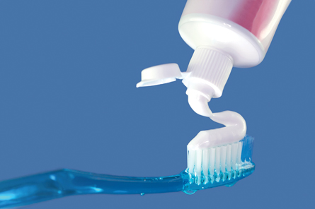
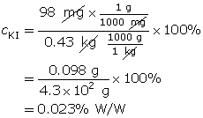
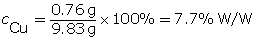
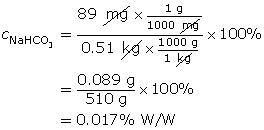

Module 4—Properties of Solutions
 Read
Read
Percentage Weight per Weight (% W/W)

© RTimages/shutterstock
A percentage weight per weight (% W/W) concentration expresses the mass of a substance as a percentage of total mass. % W/W concentrations may be used in many different contexts, including mixtures that are not true solutions. For example, toothpaste may read sodium monofluorophosphate (0.76% W/W). This means that 0.76 g of sodium monofluorophosphate is found in every 100 g of toothpaste.
Work through “COMMUNICATION example 2” on page 204 of your textbook. Then work through Example 2 below.
Example 2: A 0.43-kg solution contains 98 mg of potassium iodide. Calculate the % W/W concentration of this solution.
To calculate the % W/W concentration, the units for mass must be the same. For this example, both masses were converted into grams, although the conversion could have been milligrams or kilograms. The key thing is that both the numerator and denominator have identical units.

 Self-Check
Self-Check
SC 11. A 9.83-g sterling silver ring contains 0.76 g of copper. Determine the % W/W concentration of the copper in the ring.
SC 12. A salt solution has a mass of 354 g. After evaporating all the water, 58 g of solute remain. Determine the % W/W concentration of the salt in solution.
SC 13. 72 mg of sodium nitrate is dissolved in 450 mg of water. Determine the % W/W concentration of the sodium nitrate.
SC 14. A 0.51-kg solution contains 89 mg of copper(II) sulfate. Calculate the % W/W concentration of this solution.
SC 15. A solution contains 2.3% W/W magnesium chloride. Express this in mg/100 mg.
Self-Check Answers
SC 11.

SC 12.

SC 13. Remember, you must use the total mass of the solution (72 mg + 450 mg = 522 mg).

SC 14. Remember, the masses must be expressed in the same units. In this case, both masses were converted into grams (g).

SC 15.

Summary of Percentage Concentrations
What to Remember When Using Each Type of Calculation |
% V/V Calculations |
% W/V Calculations |
% W/W Calculations |
Units |
Make sure the solute and solution volumes are the same units (both expressed as mL or L). |
The mass (numerator) will be in grams (g) and the volume (denominator) will be in millilitres (mL). |
Make sure that both solute and solution masses are the same units (g or kg) before dividing to get the percentage. |
What the Fraction Means |
The volume of solute divided by the total (combined) volume of the solution. (The combined volume can be found by adding solute and solvent, provided the units are the same.) |
The mass of the solute divided by the total volume of the solution. (In % W/V solutions, the solute and solvent are not added to get the total volume because the units are different.) |
The mass of solute divided by the total (combined) mass of solution. (The combined mass can be found by adding solute and solvent, provided the units are the same.) |
Word Description for Expressing Concentration This Way |
“ ______ mL of solute per 100 mL of solution.” |
“ ______ g of solute per 100 mL of solution.” |
“ ______ g of solute per 100 g of solution.” |